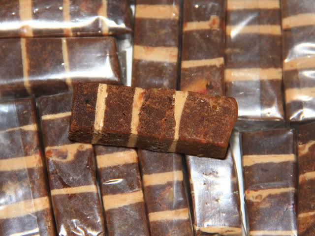
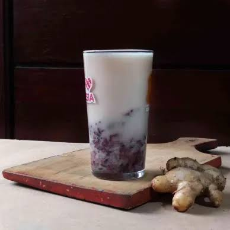
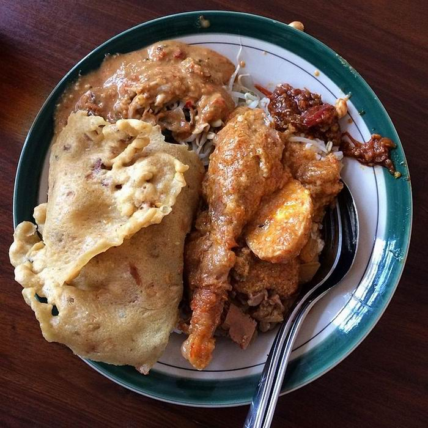
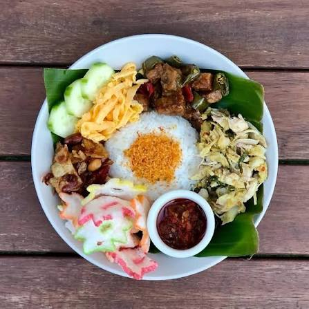
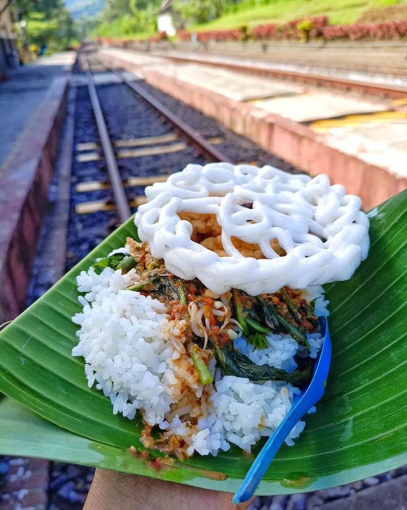

Suwar-Suwir
Camilan manis bertekstur padat yang terbuat dari olahan fermentasi tape singkong dan gula, dipotong kecil memanjang menyerupai permen dodol berwarna-warni.

Prol Tape
Kue bolu panggang padat namun lembut khas Jember berbahan dasar tape singkong, menawarkan perpaduan rasa manis, gurih, dan sedikit asam.

Wedang Cor
Wedang cor adalah minuman tradisional hangat khas Kabupaten Jember, Jawa Timur, yang diracik dari perpaduan air rebusan jahe, tape ketan, dan susu.

Gudeg Lumintu
Kuliner legendaris Jember di Warung Lumintu yang memadukan manis-gurihnya gudeg nangka muda khas Jawa Tengah dengan pedas-gurihnya sambal pecel khas Jawa Timur.

Nasi Langgi
Sajian nasi gurih berempah khas budaya Pandalungan Jember yang dihidangkan lengkap bersama aneka lauk tradisional seperti daging, abon, telur, kering tempe, dan kentang balado.

Nasi Pecel Garahan
Nasi pecel legendaris asal kawasan Stasiun Garahan, Jember, yang disajikan dalam pincuk daun pisang.